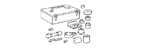
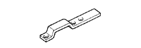
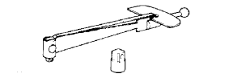

ЛОПАСТНОЙ НАСОС (для моделей с 1KD-FTV) > ПОВТОРНАЯ СБОРКА > Подготовка

|  | 09630-00014 | Комплект инструментов для переборки картера механизма рулевого управления с усилителем |
|  | (09631-00132) | Кронштейн лопастного насоса |
 | 09950-60010 | Комплект оправок |
 | (09951-00250) | Оправка 25 |
| (09951-00320) | Оправка 32 | |
 | 09950-70010 | Комплект сменных рукояток |
 | (09951-07150) | Рукоятка 150 |
| Прибор для проверки натяжения приводных ремней | - |
| Индикатор часового типа для отверстий | - |
| Ткань | - |
| Комплект плоских щупов | - |
| Микрометр | - |
| Пресс | - |
| Лента | - |
| Динамометрический ключ | - |
| Штангенциркуль | - |
| Тиски | - |
|  | 09025-00010 | Динамометрический ключ (30 кгс-см) | - |
 | 09905-00012 | Съемник пружинных стопорных колец № 1 | - |
| Параметр / Устройство | Объем | Классификация |
| Жидкость для механизма рулевого управления с усилителем | ||
| Полная | 1,0 л (1,1 кварты США, 0,9 английской кварты) | ATF DEXRON II или III или аналогичная |